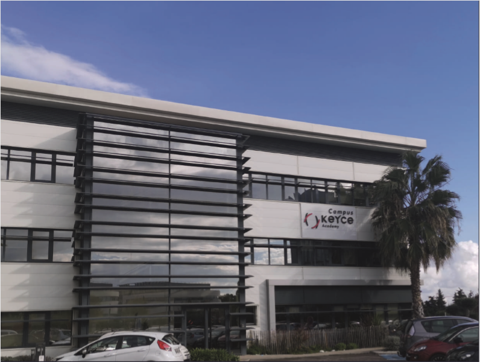

Bienvenue a Keyce Informatique
Formation de Bac+3 à Bac+5


Formation de Bac+3 à Bac+5
Niveau de sortie Bachelor en alternance :Bac+3 "Administrateur Informatique système et réseau",Code NFS 326N, Niveau 6 (EU)Certificarion professionnelle enregistrée au RNCP par L'arrêté du 26/05/16. Publié au J.O. le 16/06/2016,délivréen partenariat avec SUP DE VINCI
Moyens pédagogiques et encadrement :
Evaluation:
Niveau de sortie Ms :Bac+5 "Manager de Projet",Code NSF 320P, Niveau 7 (EU), Certification professionnelle enregistrée au RNCP par l’arrêté du 17/07/2015 délivrée en partenariat avec ECEMA.
Moyens pédagogiques et encadrement :
Evaluation:

Dans ce type de formation vous serez accompagné par un conseiller Vous pouvez donc construire votre projet professionnel à votre rythme Vous pouvez partir à l'étranger pour enrichir votre expérience et ameliorer la pratique de la langue Vous pouvez Effectuer des stages longue durée pour consolider votre CV Vous pouvez vous impliquez dans la vie de l'école Vous pouvez participé à la vie de nos associations :évènement étudiants, humanitaire, sportive, ect.
Ce rythme permet d'alterner les cours théorique et la pratique en entreprise. Keyce Informatique vous propose 2 types de contrat: le contrat d'apprentissage et le contrat de professionnalisation. Vous n'avez pas a financer votre formation et votre entreprise d'accueil vous verse une rémunération en contrepartie de vos connaissance et de votre savoir faire Nos coneillers vous accompagneront dans vos recherche grâce aux ateliers de recherche d'emploie, job-dating, journée propection terrain.
Chez Keyce Informatique il y a 2 certification par année donc 10 sur l'ensemble du cursus,cela peut aider à choisir sa spécialisation en choisissant les certification que vous souhautez passer.
Chaque année il y a un voyage a l'international proposé chez keyce informatique, c'est un voyage de 15 jours avec le choix du passage d'une certification officielle sur le site, et il y a des visites culturelles et intitutionnelles pour tou les étudiants( comptible stages et alternance